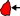
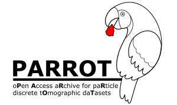

Please note that the current version of the particle database is adapted to our measurement equipment (Zeiss Xradia VERSA 510). So, measurement parameters are indicated as general as possible but with equipment specific parameter attributes (e.g. source filter). A more general approach with a structure that can accommodate the specifics of different measurement systems would have required a much larger number of parameters and would thus go far beyond the scope of a feasibility study. Of course, this is a point for a possible scale-up of the system. Nevertheless, all parameters (except reconstruction) are easily comparable with other systems. In case of calculated parameters, the calculations rules are explicitly given in the corresponding paragraph.
PARROT | ...back to PARROT main site |
PARROT stands for an oPen Access aRchive for paRticle discrete tOmographic daTasets. As certainly not the most obvious acronym, the PARROT is supposed to represent the different expressions of particle properties. Just as a bird grasps individual discrete parts of its food with its beak, we would like to provide a repository of a significantly large number of particles from various practically important particle systems. The implementation is some kind of Pilot Study which makes no claim to completeness - which in this case will never be possible. Rather, it should be about the general way of implementation. Which Use Cases exist in practice, which Data and Metadata are required for this, how can this be mapped in a Database structure that allows users convenient access and generates added value?
 User Driven Approach |
There are different strategies to implement a database system. By eliminating all redundancies and systematically optimizing hardware storage and query time, the system is perfectly adapted to the existing data - let's call this Data Driven Approach. The disadvantage is that although the structure is very easy to maintain from an administrative point of view, it is difficult to understand for the normal user. Queries are performant in execution but complex to create. With PARROT, we want to take a different approach, one that is User Driven. (1) Redundancies should be avoided and storage space optimized but not at any price. (2) Raw data should be stored separately and external frameworks should be used (see OpARA) to keep the system tight and to make it realizable up to a certain size for everyone interested without high costs. And (3) to create a system that is intuitive in its structure and easy to query.
Particle Discrete Data |
Particles are considered as single objects or as part of a collective. Particle-discrete means, that collectives are not only considered as a composite with aggregated properties, but each individual particle of this composite additionally with stand-alone properties. This view allows to describe particle systems simultaneously with respect to several different properties (multidimensional)
Relational Database |
In most cases data and metadata can be part of different aggregation levels. E.g. measurement values are available for each single measurement object. The parameters of the measurement itself are mostly the same for the whole time of the measurement. They are directly linked to the measurement but also a valuable information for the measured objects. To avoid redundancies, a relational database, in this example, would have at least two tables, one very small for the measurement (each row/dataset refers to one measurement) and a large one for the objects. Each element within the tables is uniquely identified by a primary key (e.g. object_id / measurement_id) that can be used to link the tables and get a full set of all the information without storing it statically.
OpARA |
OpARA is an Open Access Online Repository for scientific data. It is a joint project of the TU Dresden and the TU Bergakademie Freiberg. The PARROT-database uses this repository to save the raw image data in form of TIFF stacks combined with related metadata and preview images of the particle system captured with Scanning Electron or Optical Microscopy. This raw data is the starting point for the Image Analyst who wants to develop and test new image processing algorithms. As a starting point, the authors have developed their own segmentation workflows (Fiji/ImageJ), which serve as the basis for the pilot study. These processed image stacks are also stored in OpARA. The connection between PARROT and OpARA is realized with a Digital Object Identifier (DOI) that is accessible online worldwide and easily referenced in publications. The DOI is unique an thus, can serve as a primary key within PARROT.
Volume in px3 |
Describes the volume of the particle. (details see the ImageJ/ObjectCounter Plugin Documentation)
Surface in px2 |
Describes the surface of the particle. (details see the ImageJ/ObjectCounter Plugin Documentation)
Nb_Object_Voxels (number of object voxels) |
Number of all voxels that the particle consists of. Note that in the case of closed pores within the particle, this may be significantly less than the external shape would suggest. (details see the ImageJ/ObjectCounter Plugin Documentation)
Nb_Surface_Voxels (number of surface voxels) |
Number of all voxels of the particle that are in contact with the background of the image. (details see the ImageJ/ObjectCounter Plugin Documentation)
Mean_Distance_To_Surface in px |
Average distance from the geometric centre of the particle to the surface. (details see the ImageJ/ObjectCounter Plugin Documentation)
Median_Distance_To_Surface in px |
Median distance from the geometric centre of the particle to the surface. (details see the ImageJ/ObjectCounter Plugin Documentation)
X, Y, Z in px (Position in space) |
3D coordinates of the particle's geometric centre. (details see the ImageJ/ObjectCounter Plugin Documentation)
XM, YM, ZM in px () |
3D coordinates of the particle's centre of mass. (details see the ImageJ/ObjectCounter Plugin Documentation)
BX, BY, BZ in px () |
Coordinates of the upper left corner of the smallest box encompassing the particle (sometimes called Feret box). (details see the ImageJ/ObjectCounter Plugin Documentation)
B_Width, B_Height, B_Depth in px () |
Dimensions of the smallest box encompassing the particle (sometimes called Feret box).
(details see the ImageJ/ObjectCounter Plugin Documentation)
Equivalent_spherical_diameter in µm |
The ESD is the diameter of a sphere that has the same volume as the particle.

Note that this parameter causes more and more problems the further the particle shape moves away from the ideal spherical one. So, it should always be ‘evaluated’ with the help of another parameter, called Sphericity, or by direct microscopic imaging. If the Particle System is assumed to plate- or needle-like, ESD is not reasonable.
Sphericity |
Sphericity is a measure of how closely the shape of an object is similar to the shape of a perfect sphere.

Convexity |
The surface of a particle is convex if a straight line between arbitrarily selectable points of this surface is completely inside the particle.
Surface Area in px2 |
Number of surface pixels covering the surface of a particle. If the particle is very smooth, than this number should be very close to the number of surface voxels. On rough surfaces a lot more sub areas are appearing - maximum 5 for one single voxel (the 6th is the connection to the particle).
Feret box filling ratio |
Indicates the percentage that a particle covers of the smallest enclosing cuboid (Ferret box).

Principal_Axis_Length 1,2,3 in px (length of the principal axis) |
Length of the principal axis in x, y and z. A principle axis of a particle is an axis of rotation about which the particle can continue to rotate without dynamic unbalance occuring.
Settling_velocity in m/s |
Determines how fast a particle settles inside a fluid under the influence of an accelerating force (e.g. gravitation)
Settling_Align_X,Y,Z (settling alignment) |
Stable alignment coordinates of a particle during settling. X, y and z are represanatatives of the refering 3D vector.
Settling_align_time in s (settling alignment time) |
Time until this alignment is reached.
Avg_align_to_vertical in m (average alignment to vertical) |
Average alignment to the vertical axis aggregated over all vectors until the stable position is reached.
Diameter in mm |
To avoid differences in X-ray attenuation due to varying penetrated lengths, the sample should be rotational symmetric with constant diameter. In combination with the Field of View it describes if the sample is fully covered by the measurement or the scan is inside the sample. This is called Region of Interest tomography and can have significant influence on the needed Scanning Time and possible Artefacts (details are given by [KYRIELEIS 2010])
Height in mm |
In contrast to the Field of View, the sample height describes the actual height of the sample. In combination with the Number of Stacks, it describes for what percentage of the sample has been included in the measurement.
Number_stacks (number stacks) |
If the Sample Height exceeds the Field of View, it is possible to stack more than one measurements virtually. This is done by measure single volumes that are overlapping each other by a certain percentage depending on the structures within the sample (normally between 15 and 30 %).
Material |
The material of the particle sample, e.g. dolomite, limestone. Note that different material compositions are not visible in the volume file (*.VTK, *.STL). For this purpose the segmentation via a single-thresholding has to be replaced with a multiple-thresholding algorithm based on the image data stored in the OpARA system, linked via DOI.
Production_process |
The manufacturing process that generated the particles. This parameter is essential to understand the particle morphology. Particles generated by a crushing process will surely be different from particles generated by spraying. If there are multiple processes or certain steps that helps to understand the certain particle morphology, they are named in order of appearance and separated by semicolon.
Official_project_number |
If the particle system is part of an official project (e.g. Deutsche Forschungsgemeinschaft - DFG), this number could help to link to related projects that may used the same particle system for their research. Note that the financing for the PARROT-database is given by the DFG and the authors would like to thank them for their support!
Field_of_View in mm |
The field of view (FOV) determines the size of the sample which is covered by the projection image on the detector (independent of the binning). If it is possible, the FOV should always be larger than the sample width. Especially when dealing with very high magnifications the sample cannot easily be cut down to such small diameters or sample destruction should be avoided. In this case scanning is often called region of interest tomography (ROI) and requires a much higher number of projections. Note that objects outside the FOV that pass the beam path only in a very small angular range can cause artefacts in the final reconstruction, especially in the case of high attenuating phases.
Acceleration_Voltage in keV |
To produce X-ray radiation, electrons are accelerated by an electrical field with a certain voltage. In lab-based polychromatic systems, this value ranges mostly from 30 keV to 160 keV. This voltage determines the maximum energy of the generated X-ray photons.
Electrical_Power in W |
The power, as product of Acceleration Voltage and Tube Current is proportional to the current and so, can be interpreted as some kind of energy flux that determines the number of generated photons. Because the parameters are not independent of each other, there are reasonable combinations (Voltage/Power) for a stable X-ray generation, e.g. 30/2, 80/7, 160/10.
Source_Filter |
As the X-ray spectrum is in this case polychromatic, the low-energy photons tend to cause artefacts in the final reconstruction that can be corrected afterwards by applying software filters (see Beam Hardening Correction). The better more elegant way is to avoid low-energy photons of passing the sample. Because software algorithms are not perfect at all, this is the better way with regard to image quality. To do this, after passing the aperture, the X-ray beam is filtered by applying e.g. a thin copper foil. Low-energy photons are absorbed at this point and will not longer be part of the beam. The filter is named as follows: <material>;<thickness>, e.g. Cu,100µm; in case of equipment specific description LE (low energy) 1,2,3,4,5,6 or HE (high energy) 1,2,3,4,5,6
Exposure_Time in s |
Each projection image captures (is exposed to) photons within a specific time. In moste cases this exposure time is a static parameter. Sometimes, in case of non-ideal, very elongated samples, expousre time is varied to compensate for sample thickness variations - this is called variable exposure time. The minimum exposure time is determined by the minimum number of photons per pixel (or binned virtual pixel) that is necessary to generate a sufficient signal-to-noise ratio (SNR). As it is in photography, there is also an upper limit for the exposure time. If too many photons arrive at the detector, the electronic is being jammed - the projection is overexposed. To avoid this, modern systems do an automated overexposure check before starting the acquisition.
Optical_Magnification |
Normal Micro-CT devices with cone-beam geometry have one single magnification step - the geometric magnification of the beam itself. Contrary, X-ray microscopes have a second additional magnification step realized by optical lenses. Because X-rays cannot be handled with normal optical devices, they are transformed via scintillator material into photons of visual light (VIS) according to their energy. A high energy X-ray photon generates more VIS photons than a low energy one. The projection on the scintillator is now optically magnified and projected a second time on the detector panel. Availabe magnifications are e.g. 0.4x (macro), 4x, 20x and 40x. Note that the combination of geometrical and optical magnification (by multiplication) can generate very large magnifications but without practical significance. Causes are mechanical drift of the system, thermal drift of the electron interaction zone within the target material, the inhomegeniety
Number_Projections |
The number of projection images determines the angular step size between two different projections. The finer this step size, the better the reconstruction result. There is a minimum number of projections determined by the sample size within the filed of view. If there is a lot unused space around the captured object, this number is decreased. If there is a scan inside the sample, meaning that a lot of sample material passes the beam path but is not inside the field of view, this number is increased. Details see [Kyrieleis 2012].
Angular_Range in degree |
For tomographic measurement, the sample must be rotated to produce a series of projection images that have radiated through all parts of the sample from at least one direction - this corresponds to 180 degrees. To improve the signal-to-noise ratio (SNR), in many cases scanning is done over 360 degrees. To avoid redundant overlapping of the same beam paths here (out and back after 180 degrees), a projection image is inserted to create an uneven number. The outward and return paths are now slightly offset, improving SNR and providing additional information (from additional angular ranges).
Voxelsize in µm |
A voxel is a volume Pixel, the smallest image unit of a tomographic data set. The pixel, familiar from image processing, with length and width, is given depth by tomographic reconstruction. In the real non-destructive tomographic measurement methods, these are ISO voxels, i.e. length, width and depth have the same dimension. In the case of destructive methods such as the Focused Ion Beam (FIB), slices of the sample are physically cut, which are subsequently visualized using scanning electron microscopy (SEM). Depending on the system, these slices have a minimum thickness that cannot be undercut in the case of very small voxel sizes - the voxel now has significantly poorer depth resolution compared to lateral resolution.
Binning |
To improve the signal-to-noise (SNR) ratio or to save exposure time in case of very good SNR, detector pixels can be combined virtually. The signal of this virtual pixel is now the sum of the physical individual pixels. Since the voxel resolution decreases by the same factor in the process, this is given a natural reasonable limit - in most cases only 4 physical pixels within a square are combined to one virtual pixel - this corresponds to binning 2. Another aspect is the size of the resulting data set. In the case of a 2048 x 2048 pixel detector, the size of the resulting raw data set is 12.8 GB (Zeiss native format - txrm). By binning 2, the amount of data can be minimized by 1/(2x2x2) = 1/8 to 1.6 GB, which makes processing of the data set accessible on many systems in the first place.
Algorithm |
The tomographic reconstruction is performed with the help of a certain algorithm. This algorithm transforms the series of projection images into a tomogram which is saved as 3D dataset in native format of the used software or in open format (mostly TIFF). The algorithm can be algebraic, statistical or Fourier-based [Buzug 2008]. Until now, in cone beam X-ray tomography the Filtered Back Projection-algorithm (FBP) is still the most popular one, used mainly in standard software implementations.
Beam_Hardening_Correction |
X-ray measurements are always connected with the appearance of artefacts in the final reconstruction. They can be caused by the measurement itself or the post processing
of the acquired data. Perhaps the best known artefact associated with polychromatic radiation is beam hardening. It is caused by the energy dependent X-ray absorption. High-energy
photons have a lower propability to be absorbed by the radiated matter than low-energy photons - the spectrum gets ‘harder’. This leads to much higher photon counts
e.g. on edges of structures compared to its volume. This can manifest as radial gray value gradients, glowing of edges or stars and streaks in case of high attenuating phases.
During reconstruction, artefact reduction can be performed, which is called Beam Hardening Correction.
A good summary of other artefacts in X-ray tomography is given by [Davis & Elliot 2013]
and [Boas & Fleischmann 2012]
Smoothing |
A smoothing filter results in a slight blurring of the structures, which can simplify downstream image processing. In particle segmentation, for example, small measurement-related gray value fluctuations within a phase can lead to errors. Of course, the filter reduces Noise but also Details, so, it should be used with caution. The value represents the kernel with minimum 0.5.
Byte_Scaling_Min,Max |
Each voxel of the tomogram has a certain gray value that is part of an overall gray value histogram of the 3D dataset. If there are outliers in this histogram, it is sometimes reasonable to cut them off (Byte Scaling) to have the fully available for the ‘real’ information of the dataset. To the left side of the histogram (min: black), that means for low absorption and high counts, this could be e.g. air entrappments in solid embedding matrix structures. To the right side (max: white), that means for high absorption and low counts, this could be e.g. high attenuating phases coming from metallic contamination in the particle sample (see also Beam Hardening. Note that the values are given in arbitrary units and they are only comparible qualitativley in case of sample that are of same material and size.
Software_Part1,2 |
Image processing can be performed with different software solutions - commercial software and self-written code. Part 2 is only used if it is a second standalone software solution. This does not concern another method / module within the same framework. These details are described in more detail in the Image Processing Workflow.
Image_Processing_Workflow_Part1,2 |
The workflow of the applied image processing steps is shown separated by semicolons in such a way that it is possible in principle to reproduce and implement it in different software packages. In the case of self-written code, no explicit names are listed, but principle methods.